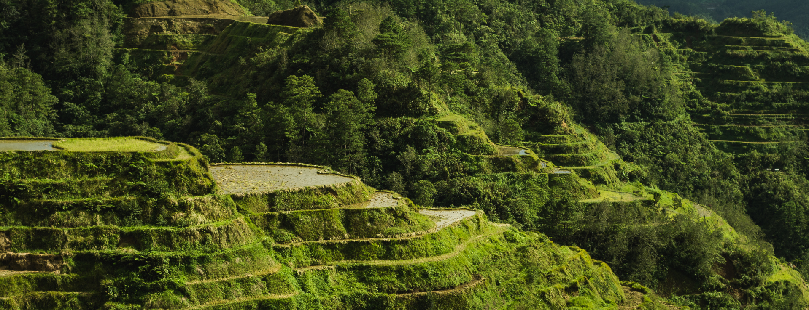
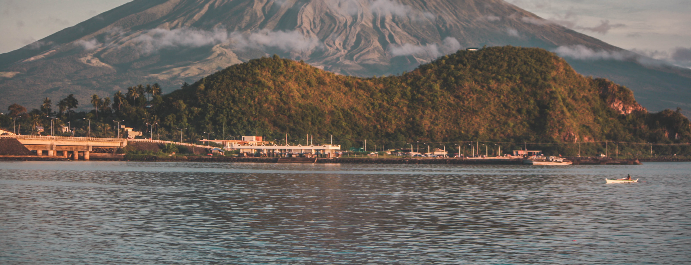
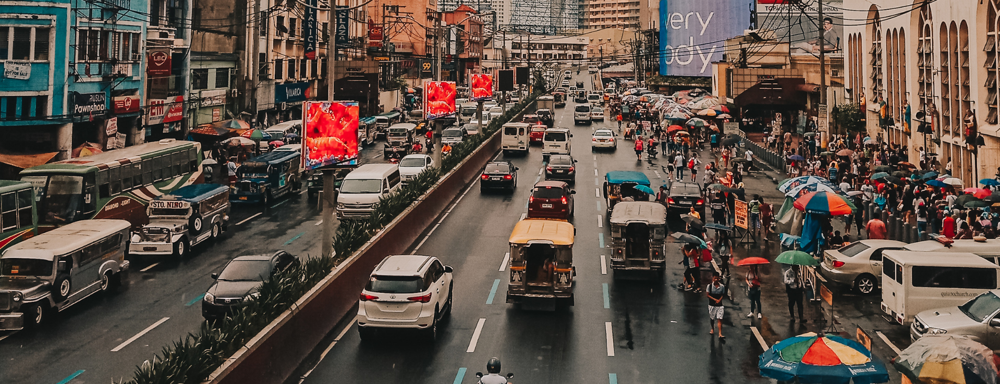
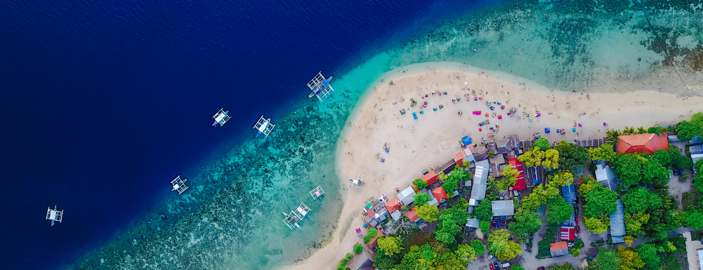

Welcome to Luzon
Luzon, the largest island in the Philippines, is a vibrant tapestry of natural wonders, rich history, and diverse cultures. Home to the bustling metropolis of Manila, it also boasts serene beaches, majestic mountains, and picturesque rural landscapes. From the renowned Banaue Rice Terraces to the pristine beaches of Zambales, Luzon offers a myriad of experiences for every traveler.




